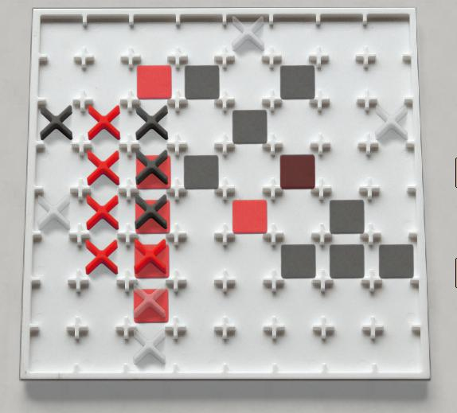

Mod X
Mod X is a twist on the familiar n-in-a-row game. In this
case n=5, and the "5" patterns are five-in-a-line, five-in-an-X and
five-in-a-+. In addition to the multiple shapes,
there are neutral "joker" pieces that can be used to complete any
shape. Finally, making a scoring shape scores a point, but
that point can be un-scored if the other player makes another scoring
shape that uses it.
There are a few subtle points in the official
rules about the placement of the joker pieces.
Robots: the preliminary report is that the bot is pretty
fierce.
|

|